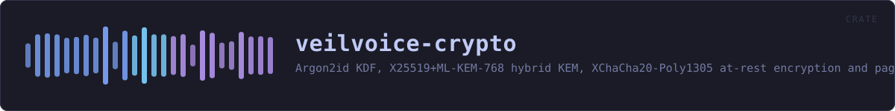

veilvoice-crypto
Argon2id KDF, X25519+ML-KEM-768 hybrid KEM, XChaCha20-Poly1305 at-rest encryption and page-locked amnesic secrets for VeilVoice.
reference · the same page on GitHub
Key derivation, post-quantum-hybrid key agreement, authenticated encryption and amnesic secret storage for VeilVoice.
What this crate is for
veilvoice_core(veilvoice-core.html) makes a voice unrecognisable; it does not hide the words, and it is not meant to. When a recording needs to stay secret as well — at rest on disk, or in transit to someone else — that is this crate's job.
kdf— Argon2id, for turning a password into a key.hybrid— X25519 + ML-KEM-768, so a recording captured today is not readable by a quantum adversary tomorrow.aead— XChaCha20-Poly1305, with random nonces and authenticated associated data.container— the.veilfile format that ties the three together.amnesia— page-locked, zeroizing, constant-time-comparable secrets.shred— secure erasure, and an honest account of what that is worth on flash storage.privatefile— writing a file that is owner-only from the moment it exists, rather than world-readable until a second syscall tightens it.lock— the application lock: an Argon2id verifier with a rate limit, which protects against casual access and says so rather than pretending to be tamper-proof.
Threat model, stated plainly
This crate protects data at rest and in transit against an attacker who later obtains the file, including one who stores it until quantum hardware exists. It does not protect against an attacker who is already running code as you, or who can read this process's memory: page-locking keeps keys out of the swap file, not out of a debugger. Hibernation writes RAM to disk wholesale and defeats locking entirely.
Example
use veilvoice_crypto::{container, kdf};
// Cheap parameters so the doctest is fast; real callers use the default.
let params = kdf::KdfParams::weak_for_tests();
let sealed = container::seal_with_password(b"pass phrase", b"audio bytes", params)?;
assert_eq!(container::open_with_password(b"pass phrase", &sealed)?, b"audio bytes");
assert!(container::open_with_password(b"wrong", &sealed).is_err());VeilVoice contains no unsafe code at all — including the page-locking in amnesia, which goes through a safe wrapper.
In plain words
This is the locking.
Two separate things use it. Recordings are sealed on your disk so that somebody who takes the disk cannot listen to them, and the app can be put behind a password so somebody who picks up your unlocked computer cannot open it.
Those two passwords are deliberately different. Opening the program should not be the same act as unsealing everything it has ever written.
The maths is chosen to be slow to guess and to still be safe if somebody one day builds a quantum computer. Nothing is sent anywhere; the sealing happens on your machine and the key is made from your password each time.
HOW THE CRATE FITS TOGETHER
Every arrow is a crate:: or super:: path one module actually uses, read out of the source rather than drawn by hand.
The same graph as Mermaid source
%%{init: {"theme":"base","themeVariables":{"background":"#1a1b26","primaryColor":"#1f2335","primaryTextColor":"#c0caf5","primaryBorderColor":"#7aa2f7","secondaryColor":"#16161e","tertiaryColor":"#16161e","lineColor":"#737aa2","textColor":"#c0caf5","mainBkg":"#1f2335","nodeBorder":"#7aa2f7","clusterBkg":"#16161e","clusterBorder":"#2f3549","fontFamily":"ui-monospace, SFMono-Regular, Consolas, monospace","fontSize":"14px"}}}%%
flowchart TD
n_lib(["lib.rs<br/>190 lines"])
n_aead["aead.rs<br/>178 lines"]
n_amnesia["amnesia.rs<br/>326 lines"]
n_container["container.rs<br/>491 lines"]
n_hybrid["hybrid.rs<br/>448 lines"]
n_kdf["kdf.rs<br/>525 lines"]
n_lock["lock.rs<br/>745 lines"]
n_privatefile["privatefile.rs<br/>169 lines"]
n_shred["shred.rs<br/>415 lines"]
n_lock --> n_privatefile
click n_lib href "https://github.com/tilas01/veilvoice/blob/main/crates/veilvoice-crypto/src/lib.rs" "open the source"
click n_aead href "https://github.com/tilas01/veilvoice/blob/main/crates/veilvoice-crypto/src/aead.rs" "open the source"
click n_amnesia href "https://github.com/tilas01/veilvoice/blob/main/crates/veilvoice-crypto/src/amnesia.rs" "open the source"
click n_container href "https://github.com/tilas01/veilvoice/blob/main/crates/veilvoice-crypto/src/container.rs" "open the source"
click n_hybrid href "https://github.com/tilas01/veilvoice/blob/main/crates/veilvoice-crypto/src/hybrid.rs" "open the source"
click n_kdf href "https://github.com/tilas01/veilvoice/blob/main/crates/veilvoice-crypto/src/kdf.rs" "open the source"
click n_lock href "https://github.com/tilas01/veilvoice/blob/main/crates/veilvoice-crypto/src/lock.rs" "open the source"
click n_privatefile href "https://github.com/tilas01/veilvoice/blob/main/crates/veilvoice-crypto/src/privatefile.rs" "open the source"
click n_shred href "https://github.com/tilas01/veilvoice/blob/main/crates/veilvoice-crypto/src/shred.rs" "open the source"This site loads no third-party script, so it cannot run Mermaid; the diagram above is the same nodes and edges drawn by the generator instead. GitHub renders the source below directly.
THE FILES
| File | Lines | What it is |
|---|---|---|
aead.rs | 178 | Authenticated encryption with XChaCha20-Poly1305. |
amnesia.rs | 326 | Amnesic secret storage: page-locked, zeroized, and never printed. |
container.rs | 491 | The .veil encrypted container format. |
hybrid.rs | 448 | Post-quantum hybrid key encapsulation: X25519 + ML-KEM-768. |
kdf.rs | 525 | Password-based key derivation with Argon2id. |
lib.rs | 190 | Key derivation, post-quantum-hybrid key agreement, authenticated encryption and amnesic secret storage for VeilVoice. |
lock.rs | 745 | The application lock: an Argon2id password verifier with a rate limit. |
privatefile.rs | 169 | Writing a file that only its owner can read. |
shred.rs | 415 | Secure erasure — the self-destruct. |
seal_and_open.rs | 80 | no module documentation yet |
parser_fuzz.rs | 368 | Randomised robustness testing for the two parsers that read untrusted input. |
timing.rs | 249 | Timing measurement of the password paths. |